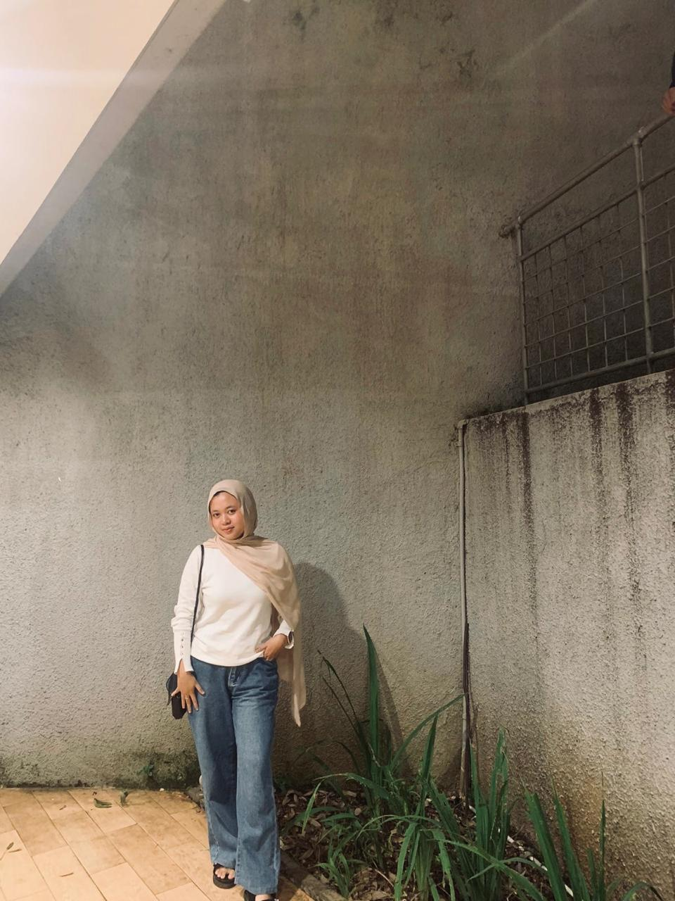

Selamat datang di portofolio saya! Saya adalah seseorang mahasiswa yang sedang menempuh pendidikan di perkuliahan sejak tahun 2024. Dengan Jurusan Sistem Informasi di Universitas Sebelas April.
Dalam aktivitas sehari-hari, saya termasuk pribadi yang cukup aktif, baik dalam menyelesaikan tugas berinteraksi dengan teman, maupun mencoba berbagai hal baru.
Dalam berinteraksi, saya terbilang cukup mudah untuk berkomunikasi dengan orang baru, meski cenderung santai namun tetap sopan, serta berusaha membangun hubungan yang baik dengan orang lain.
Saya berharap kedepannya dapat terus mengembangkan kemampuan dan menambah pengalaman agar bisa mencapai tujuan hidup yang lebih baik dan bermanfaat.
"Grow slowly, but never stop."
| Posisi | Perusahaan | Tahun |
|---|---|---|
| - | - | - |